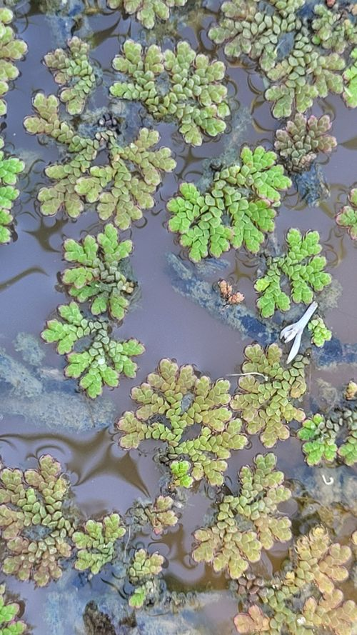

Salviniaceae
Floating Fern Family
Salviniaceae is a family of highly specialized, free-floating aquatic ferns belonging to the order Salviniales. It comprises two distinct genera, Salvinia and Azolla. These ferns are characterized by their small size, modified leaves unlike typical fern fronds, lack of true roots (in Salvinia) or simple roots (Azolla), and heterospory (producing two types of spores within sporocarps). They inhabit still or slow-moving freshwater habitats worldwide.
Overview
The Salviniaceae represent a remarkable adaptation of ferns to a fully aquatic, free-floating lifestyle. Unlike their terrestrial relatives, they are not rooted in soil and drift on the water surface. Their morphology is highly modified, often bearing little resemblance to typical ferns. The family is notable for being heterosporous, producing large female megaspores and numerous small male microspores, a trait shared with only a few other fern lineages and all seed plants.
The two genera are morphologically distinct. Salvinia species have whorls of three leaves: two floating, photosynthetic, often hairy leaves, and one submerged, finely dissected leaf that resembles roots and bears the reproductive structures (sporocarps). Azolla, commonly known as mosquito fern, is even smaller, with tiny, overlapping, bilobed leaves; the upper lobe contains symbiotic nitrogen-fixing cyanobacteria (Anabaena azollae), making Azolla ecologically significant and useful as a biofertilizer.
Both genera reproduce rapidly via vegetative fragmentation, often forming dense mats on the water surface. While Azolla has economic importance, several species of both Salvinia (e.g., giant salvinia, S. molesta) and Azolla can become highly invasive weeds, disrupting aquatic ecosystems.
Quick Facts
- Scientific Name: Salviniaceae
- Common Name: Floating fern family, Water fern family (also Mosquito fern for Azolla)
- Number of Genera: 2 (Salvinia, Azolla)
- Number of Species: Approximately 20 (ca. 10 Salvinia, ca. 7-10 Azolla)
- Distribution: Worldwide in tropical, subtropical, and warm-temperate freshwater habitats.
- Key Features: Free-floating aquatic, heterosporous, highly modified leaves, Azolla-Anabaena symbiosis.
- Evolutionary Group: Polypodiopsida (Leptosporangiate Ferns) - Salviniales
Key Characteristics
Growth Form and Habit
Small, free-floating aquatic ferns, living entirely on the water surface or suspended just below it. They are not anchored by roots to the substrate (though Azolla has simple roots dangling in the water).
Leaves (Fronds)
Leaves are highly modified and do not resemble typical fern fronds. They show distinct patterns in the two genera:
- Salvinia: Leaves are arranged in whorls of three at each node along a floating stem.
- Two leaves are dorsal (upper), floating, ovate to oblong, entire, green, photosynthetic, and often covered with complex, water-repellent hairs on the upper surface.
- One leaf is ventral (lower), submerged, finely dissected into root-like filaments, non-photosynthetic, and bears the sporocarps.
- Azolla: Leaves are tiny (often 1-2 mm), alternate, closely overlapping along branching stems, and distinctly bilobed.
- The upper (dorsal) lobe is thicker, green, photosynthetic, and contains internal cavities housing symbiotic nitrogen-fixing cyanobacteria (Anabaena azollae).
- The lower (ventral) lobe is thinner, often submerged or resting on the water, and may bear sporocarps.
Heterospory and Sporocarps
Salviniaceae are heterosporous, producing two types of spores within specialized, hardened, globose structures called sporocarps (modified sori/indusia). Sporocarps develop on the submerged leaf (Salvinia) or the lower leaf lobe/stem axils (Azolla).
- Megasporangia: Contained within megasporocarps, each typically producing only one large, functional megaspore (female).
- Microsporangia: Contained within microsporocarps, each producing numerous (commonly 32 or 64) small microspores (male).
- In Azolla, microspores often remain aggregated in groups called massulae, which may have specialized hooked structures (glochidia) aiding attachment to megaspores.
Fertilization and development of the embryo occur associated with the megaspore, often still within or attached to the parent plant structures.
Azolla-Anabaena Symbiosis
A defining feature of Azolla is its obligate symbiosis with the nitrogen-fixing cyanobacterium Anabaena azollae. The cyanobacteria reside in specialized cavities within the dorsal leaf lobes and convert atmospheric nitrogen (N2) into ammonia, providing a vital nitrogen source for the fern. This symbiosis makes Azolla exceptionally rich in nitrogen and ecologically important, especially in nutrient-poor waters and historically in rice paddies as a biofertilizer.
Vegetative Reproduction
Rapid reproduction by fragmentation of the floating stems is the primary means of propagation for both genera, allowing them to quickly cover water surfaces under favourable conditions.
Field Identification
Identifying Salviniaceae involves recognizing their free-floating aquatic habit and the distinct vegetative features of the two genera.
Primary Identification Features
- Habitat: Free-floating on still or slow-moving freshwater surfaces.
- Salvinia Features:
- Pairs of visible floating leaves (often ovate/oblong, > 5mm long) with conspicuous hairs (may look velvety or cage-like under magnification).
- Presence of submerged, root-like dissected leaf (often brownish).
- Absence of true roots.
- Azolla Features:
- Very small plants (often forming reddish or green mats).
- Tiny (< 2mm), overlapping, scale-like leaves giving a mossy or crystalline appearance.
- Presence of simple roots hanging below.
- Sporocarps: Small, globose structures attached to submerged parts (if present and visible).
Common Confusion Points
- Duckweeds (Lemnaceae family): Also small, free-floating aquatics, but are flowering plants. They have a much simpler thallus-like structure, often with only 1-2 tiny roots (or none), and lack the distinct leaf arrangements of Salviniaceae.
- Floating Liverworts (e.g., Ricciocarpos natans): Can form floating rosettes, but have a different texture (more fleshy/thalloid) and lack the specialized leaves, roots (in Azolla), and sporocarps of Salviniaceae.
Field Guide Quick Reference
Look For (Salvinia):
- Free-floating, >5mm leaves
- Paired hairy floating leaves
- Submerged dissected "root-like" leaf
- No true roots
- Sporocarps on submerged leaf
Look For (Azolla):
- Free-floating, tiny (<2mm leaves)
- Overlapping, bilobed leaves
- Often reddish/green mats
- Simple roots hanging below
- Anabaena symbiosis (not visible)
- Sporocarps on lower lobe/axils
Notable Examples
Both genera contain species of ecological and economic importance, including significant invasive weeds.

Salvinia
Water Spangles, Floating Fern
Includes about 10 species. Floating leaves have complex hairs that trap air, aiding buoyancy and repelling water. Salvinia molesta (Giant Salvinia) is a notorious invasive weed in warm regions worldwide, forming thick mats that block waterways and sunlight. Salvinia minima is smaller and also widespread.

Azolla
Mosquito Fern, Water Velvet
Includes about 7-10 species. Known for its symbiotic relationship with nitrogen-fixing cyanobacteria (Anabaena). Historically used as a green manure in rice paddies. Can form dense mats, sometimes turning reddish in high light. Species like A. filiculoides and A. pinnata are widespread; some can be invasive.
Phylogeny and Classification
Salviniaceae belongs to the order Salviniales, a distinct lineage of leptosporangiate ferns highly adapted to aquatic environments. This order is characterized by heterospory and the production of sporocarps. Salviniales is not closely related to the Schizaeales order (containing Schizaeaceae, Anemiaceae, Lygodiaceae).
Within Salviniales, Salviniaceae (containing the free-floating genera Salvinia and Azolla) is the sister family to Marsileaceae (containing rooted aquatic ferns with clover-like leaves, like Marsilea, Pilularia, Regnellidium). The entire order Salviniales represents one of the major evolutionary radiations within the Polypodiopsida class.
Position in Plant Phylogeny
- Kingdom: Plantae
- Clade: Tracheophytes (Vascular plants)
- Class: Polypodiopsida (Leptosporangiate ferns)
- Order: Salviniales
- Family: Salviniaceae
Evolutionary Significance
Salviniaceae is highly significant for understanding:
- Adaptation to Aquatic Habitats: Extreme morphological modifications for a free-floating lifestyle.
- Evolution of Heterospory: Salviniales is one of the few independent origins of heterospory within ferns.
- Symbiosis: The ancient and obligate Azolla-Anabaena nitrogen-fixing symbiosis is a key example of co-evolution.
- Miniaturization: Represents trends towards reduced size and complexity in plant evolution.